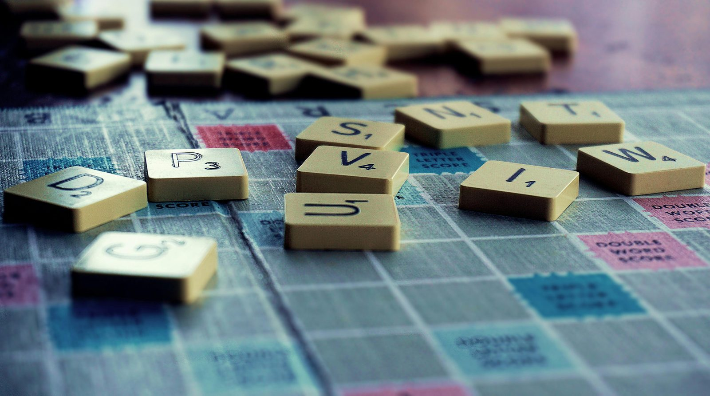

Stephen D. Krashen's language acquisition theories emphasize input, affect, and brain utilization in language learning.
L'insegnamento delle lingue ha beneficiato enormemente delle ricerche condotte da Stephen D. Krashen, un linguista americano noto per i suoi studi sulla glottodidattica. Krashen ha sviluppato una teoria composta da sei ipotesi che offrono una visione innovativa su come le lingue vengono apprese e acquisite. Queste teorie hanno influenzato molti approcci didattici moderni, tra cui quello di Open Minds, che si basa sull'idea che l'acquisizione linguistica avviene in modo naturale e attraverso un'esposizione adeguata agli input linguistici.
Key Takeaways
- Acquisizione vs. Apprendimento: Krashen distingue tra il processo inconscio di acquisizione e quello consapevole di apprendimento.
- Monitor: Funzione di controllo della correttezza linguistica durante l'apprendimento.
- Ordine Naturale: Le regole grammaticali vengono acquisite in un ordine naturale.
- Input Comprensibile: L'apprendimento avviene solo con esposizione a input comprensibili.
- Filtro Affettivo: Le emozioni influenzano l'efficacia dell'apprendimento.
- Bimodalità e Direzionalità: Coinvolgere entrambi gli emisferi cerebrali facilita l'apprendimento.
Ipotesi di Distinzione tra Acquisizione e Apprendimento
Krashen fa una distinzione chiave tra acquisizione e apprendimento. L'acquisizione è un processo inconscio, simile a come i bambini imparano la loro lingua madre, che porta a una conoscenza stabile e duratura. Questo processo è spontaneo e naturale, basato sull'intuizione e l'esposizione agli input. L'apprendimento, invece, è consapevole e razionale, spesso associato a contesti educativi formali. Sebbene possa portare a competenze linguistiche elevate, l'apprendimento non si stabilizza come l'acquisizione.
Ipotesi del Monitor
Il monitor è una funzione che controlla la correttezza delle espressioni linguistiche. Secondo Krashen, le persone utilizzano il monitor per verificare e correggere le loro produzioni linguistiche, basandosi su feedback esterni come reazioni di approvazione o correzioni. L'efficacia del monitor varia in base all'età e allo stile cognitivo dell'individuo, influenzando così il processo di apprendimento.
Ipotesi dell'Ordine Naturale
Krashen sostiene che le strutture grammaticali vengono acquisite in un ordine naturale, dalle più semplici alle più complesse. Questo processo di acquisizione non segue necessariamente l'ordine con cui vengono insegnate le regole grammaticali, ma piuttosto un percorso spontaneo e predeterminato.
Ipotesi dell'Input Comprensibile
L'input comprensibile è essenziale per l'acquisizione linguistica. Krashen afferma che gli studenti imparano meglio quando sono esposti a input linguistici che comprendono, ma che contengono elementi nuovi e leggermente oltre il loro livello attuale, indicato come "i+1". Inoltre, per massimizzare l'acquisizione, l'ambiente di apprendimento deve essere privo di ansia, in modo che il filtro affettivo sia basso.
Ipotesi del Filtro Affettivo
Il filtro affettivo di Krashen si riferisce all'influenza delle emozioni sull'apprendimento linguistico. Un filtro affettivo alto, causato da ansia o mancanza di sintonia con l'insegnante, può impedire l'assimilazione degli input linguistici. Al contrario, un ambiente positivo e rilassato abbassa il filtro affettivo, facilitando così l'acquisizione.
Bimodalità e Direzionalità
Krashen sottolinea l'importanza di coinvolgere entrambi gli emisferi cerebrali nel processo di apprendimento. L'emisfero destro è associato a competenze olistiche e intuitive, mentre il sinistro è più analitico e sequenziale. Utilizzare entrambi gli emisferi in modo complementare può migliorare l'acquisizione linguistica, rendendo il processo di apprendimento più completo e integrato.
Le teorie di Stephen D. Krashen offrono una prospettiva innovativa sull'apprendimento delle lingue. Distinguendo tra acquisizione e apprendimento, enfatizzando l'importanza dell'input comprensibile e del filtro affettivo, e riconoscendo il ruolo cruciale degli emisferi cerebrali, queste teorie forniscono una guida preziosa per educatori e studenti. L'applicazione di questi principi può facilitare un apprendimento più naturale, efficace e duraturo, portando a una maggiore padronanza della lingua target.

FAQs
Cos'è l'acquisizione secondo Krashen? L'acquisizione è un processo inconscio e naturale di apprendimento della lingua, simile a come i bambini imparano la loro lingua madre.
Come funziona il monitor secondo Krashen? Il monitor è una funzione di controllo che verifica la correttezza delle espressioni linguistiche, correggendo errori e consolidando le conoscenze corrette.
Perché è importante l'input comprensibile? L'input comprensibile è fondamentale perché consente agli studenti di acquisire la lingua in modo efficace, assicurando che possano comprendere e assimilare nuovi concetti linguistici.
Cos'è il filtro affettivo? Il filtro affettivo è un concetto che descrive come le emozioni possono influenzare l'apprendimento linguistico. Un ambiente positivo e privo di ansia facilita l'acquisizione.
Cosa si intende per bimodalità e direzionalità nel contesto dell'apprendimento linguistico? La bimodalità si riferisce al coinvolgimento di entrambi gli emisferi cerebrali nel processo di apprendimento. La direzionalità indica il passaggio dalle competenze olistiche (emisfero destro) a quelle analitiche (emisfero sinistro).
The field of language teaching has greatly benefited from the research of Stephen D. Krashen, an American linguist renowned for his studies in language acquisition. Krashen developed a theory consisting of six hypotheses that provide a fresh perspective on how languages are learned and acquired. These theories have influenced many modern teaching approaches, including the Open Minds method, which emphasizes natural language acquisition through adequate exposure to linguistic input.
Key Takeaways
- Acquisition vs. Learning: Krashen distinguishes between the unconscious process of acquisition and the conscious process of learning.
- Monitor: The function that checks the correctness of linguistic output during learning.
- Natural Order: Grammatical rules are acquired in a natural sequence.
- Comprehensible Input: Learning occurs only with exposure to comprehensible input.
- Affective Filter: Emotional factors influence the effectiveness of language learning.
- Bimodality and Directionality: Engaging both hemispheres of the brain aids in learning.
Acquisition vs. Learning Hypothesis
Krashen makes a critical distinction between acquisition and learning. Acquisition is an unconscious process, similar to how children learn their native language, leading to stable and lasting knowledge. This process is spontaneous and natural, relying on intuition and exposure to input. In contrast, learning is a conscious and rational process, often associated with formal educational settings. While it can lead to high levels of linguistic competence, learning does not stabilize in the same way as acquisition.
The Monitor Hypothesis
The monitor is a function that checks the correctness of language expressions. According to Krashen, individuals use the monitor to verify and correct their linguistic productions, based on external feedback such as approval or corrections. The effectiveness of the monitor varies depending on the individual's age and cognitive style, impacting the learning process.
The Natural Order Hypothesis
Krashen posits that grammatical structures are acquired in a natural order, from simpler to more complex. This acquisition process does not necessarily follow the order in which grammatical rules are taught but rather a spontaneous and predetermined path.
The Comprehensible Input Hypothesis
Comprehensible input is essential for language acquisition. Krashen argues that students learn best when exposed to language input that they understand, but that includes elements just beyond their current level, known as "i+1". Furthermore, to maximize acquisition, the learning environment must be free of anxiety, allowing the affective filter to be low.
The Affective Filter Hypothesis
Krashen's affective filter refers to the influence of emotions on language learning. A high affective filter, caused by anxiety or lack of rapport with the teacher, can prevent the assimilation of linguistic input. Conversely, a positive and relaxed environment lowers the affective filter, facilitating acquisition.
Bimodality and Directionality
Krashen highlights the importance of involving both hemispheres of the brain in the learning process. The right hemisphere is associated with holistic and intuitive skills, while the left is more analytical and sequential. Using both hemispheres complementarily can enhance language acquisition, making the learning process more comprehensive and integrated.
Stephen D. Krashen's theories offer a fresh perspective on language learning. By distinguishing between acquisition and learning, emphasizing the importance of comprehensible input and the affective filter, and recognizing the crucial role of the brain's hemispheres, these theories provide valuable guidance for educators and students. Applying these principles can facilitate more natural, effective, and enduring language learning, leading to greater mastery of the target language.
FAQs
What is acquisition according to Krashen? Acquisition is an unconscious and natural process of learning a language, similar to how children learn their native language.
How does the monitor work according to Krashen? The monitor is a function that checks the correctness of language expressions, correcting errors and consolidating correct knowledge.
Why is comprehensible input important? Comprehensible input is essential because it allows students to acquire the language effectively, ensuring they can understand and assimilate new linguistic concepts.
What is the affective filter? The affective filter is a concept that describes how emotions can influence language learning. A positive, anxiety-free environment facilitates acquisition.
What is meant by bimodality and directionality in language learning? Bimodality refers to the involvement of both brain hemispheres in the learning process. Directionality indicates the progression from holistic skills (right hemisphere) to analytical skills (left hemisphere).